25
Sensitivity Analysis
Sensitivity analysis helps in finding out the sensitivity of specifications to variables, device parameters, statistical parameters and DC operating point parameters. This chapter provides an overview of sensitivity analysis and describes how to run this analysis and view results. It also explains how to create worst case corners based on the results of sensitivity analysis.
For more details, refer to the following sections:
- Generating Sensitivity Data
- Viewing Sensitivity Analysis Results
- Working with Sensitivity Data
- Plotting Sensitivity Analysis Results
- Saving the Sensitivity Data
Generating Sensitivity Data
You can generate and view data on the sensitivity of specifications to variables, device parameters, statistical parameters and DC operating point parameters.
Variation of Design Variables and Device Parameters
ADE Assembler varies each variable or parameter one-factor-at-a-time (OFAT). To calculate sensitivity, the tool perturbs the variable or parameter value around its nominal value, while leaving other variables as fixed.
For design and PVT variation, ADE Assembler provides the following methods:
-
OFAT 3-level: Specify three values for a variable while varying one factor at a time. For example, 1.9u, 2.0u, 2.1u with nominal value equal to 2.0u. If, instead of three points, you specify a range of values, the tool chooses the following values of the variable for simulation:
For example, if the variable range is 1u:0.1u:5u and the nominal value is 3.6u, the three values used by the tool are: 3.5u 3.6u, and 3.7u. - OFAT Sweep: Specify more than three values for a variable while varying one factor at a time. For example, if you specify the variable range as 200n:50n:400n, and the nominal value as 250n, the variable values used for simulation are: 200n, 250n, 300n, 350n, and 400n.
-
Hammersley: Select this method to capture both nonlinear relationships and interactions among the design variables. The OFAT methods vary one factor at a time, whereas Hammersley generates samples varying more than one variable at a time. You can post process the Hammersley sampling results in the Variance Contribution analysis.
Variation of Statistical Parameters
For statistical variation, ADE Assembler varies each statistical parameter one-factor-at-a-time at 3 levels (values). When the statistical parameter is modeled with normal or log normal distribution, ADE Assembler uses the following values for simulation:
When the statistical parameter is modeled with uniform distribution, ADE Assembler chooses values based on the percentage of range.
Sometimes the variable whose sensitivity is being determined is at its boundary of possible values (as specified by the variable range and the nominal value). In this case, ADE Assembler cannot determine a higher value (if the current value is at the upper boundary) or lower value (if at lower boundary) for computing its sensitivity. In this case, the tool uses only two points for calculating the sensitivity and the correlation will always be 1 or -1, since two points will always form a straight line. However, the regression values (for this variable) are still applicable (since they represent the slope of the line).
For boundary conditions where there are only two points available for simulation, the correlation is +1 or -1, depending upon whether the regression coefficient is positive or negative. However, it does not reflect the true meaning of correlation because you need to specify at least three points for calculating the correlation coefficients.
To generate and view the sensitivity data:
-
Select Sensitivity Analysis in the Select a Run Mode drop-down list on the Run toolbar, then click Simulation Options on the Run toolbar.
The Sensitivity form appears, as shown below.
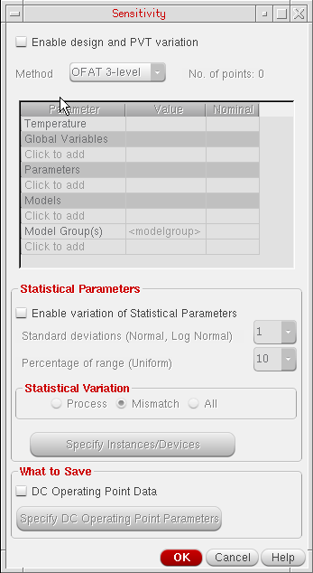 -
Select the Enable Design and PVT Variation check box if you want to vary temperature, global variables, device parameters, or model files for sensitivity analysis.
Ensure that if you select this check box, you have specified at least one variable or parameter in the Variables and Parameters assistant. The variables or parameters that you have included in this form appear with a strikethrough in the Variables and Parameters assistant and the Data View pane.
Also ensure that you disable all other variables or parameters that have sweep values in the Variables and Parameters assistant and are not overridden in the Sensitivity form. This is because Sensitivity Analysis does not consider variables with sweep values in the Variables and Parameters assistant and displays an error.
Then, do the following:-
In the Method field, specify the method to be used to vary global variable and parameter values. You can select any one of the following two values:
For more details on these methods, refer to Variation of Design Variables and Device Parameters. - In the table given below the Method field, select the design variables, parameter, or model files that you want to vary. For more details, refer to Specifying Variables, Parameters, or Model Files to be Varied for Sensitivity Analysis.
-
Depending on the range of values, the nominal value, and the value in the Method list, the tool calculates the total number of data points for the sensitivity analysis and displays the count in the No. of Points label to the right of the Method field, as shown below:
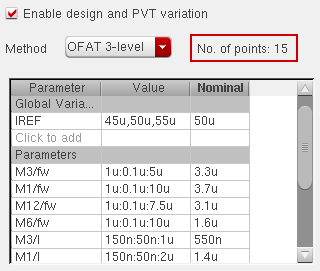
-
In the Method field, specify the method to be used to vary global variable and parameter values. You can select any one of the following two values:
-
Select the Enable variation of Statistical Parameters check box if you want to vary statistical process and mismatch parameters.
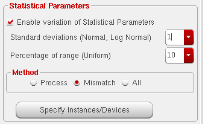Then, do the following:- In the Standard deviations (Normal, Log Normal) field, specify the number of standard deviations for statistical parameters with normal or log normal distribution.
-
In the Percentage of Range (Uniform) field, specify the percentage range by which statistical parameters with uniform distribution need to be varied.
-
In the Method group box, select one of the following statistical variations:
- (Optional) In step c above, if you select Mismatch or All, by default, the tool varies mismatch statistical parameters for all devices and instances in the design. Click Specify Instances/Devices to select specific instances and devices for which you want to analyze the impact of statistical variations. For more details, refer to Selecting Instances and Parameters for Mismatch Variation.
-
(Optional) By default, you cannot view the sensitivity data for DC operating point parameters because the data is not saved in the results database. To save and view sensitivity data for specific DC operating point parameters, do the following:
- Select the DC Operating Point Data check box.
- Click the Specify DC Operating Point Parameters button to specify the DC operating point parameters for which you want to save and view sensitivity data. For more information, see Saving Sensitivity Data for DC Operating Point Parameters.
- Click OK to save the changes and close the Sensitivity form.
-
Click the Run Simulation
 button on the Run toolbar.
button on the Run toolbar.
After the run is complete, the tool displays the simulation results on the Results tab. In addition, it also opens the Sensitivity Analysis window that displays the sensitivity data for different specs or parameters. By default, this window displays the Variance Contribution results in percentage format, as shown below.
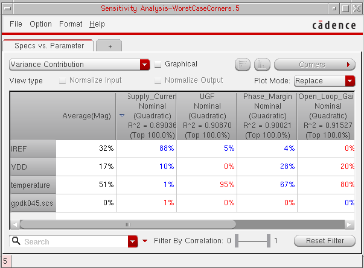You can view the data in other formats. For more details, refer to Working with Sensitivity Data.
To display the maximum and minimum columns in the Sensitivity Analysis results table, right-click the left-most column heading and choose Max or Avg or Min. The Average column is displayed by default. Also, the mismatch contribution tab displays only Max column.
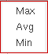
Support for Multi-Technology Simulations in Sensitivity Analysis
If you have enabled multi-technology simulations for a test, in the Sensitivity Analysis results window, the parameter names for MTS blocks are prefixed with the name of their corresponding block.
For example, in the sensitivity analysis results displayed below, the names of parameters for the inv MTS block are prefixed with inv.
Related Topics
- Specifying Variables, Parameters, or Model Files to be Varied for Sensitivity Analysis
- Selecting Instances and Parameters for Mismatch Variation
- Viewing Sensitivity Analysis Results
- Working with Sensitivity Data
- Plotting Sensitivity Analysis Results
- Highlighting Associated Devices in the Schematic
- Saving the Sensitivity Data
Specifying Variables, Parameters, or Model Files to be Varied for Sensitivity Analysis
You can specify design variables, parameters, or model files that you want to vary for sensitivity analysis in the table given on the Sensitivity form.
In this table, you can select the name of a variable and specify values for which you want to vary the variable and a nominal value for it.
-
Double-click the Value cell for
Temperatureand specify a range or a set of values for which you want to vary temperature. -
Double-click the Nominal cell for temperature and open the drop-down list.
All the values specified in the Value cell are displayed in the list. -
Select a nominal value from this list.
Alternatively, you can get the value of temperature from the test. For this, right-click the Nominal cell forTemperatureand choose Get Value from Test. This command copies the value of temperature from the test.If the value taken from the test does not exist in the Value cell, the tool automatically adds the nominal value to the existing values. For example, if you specify -40 and 85 as two values for temperature and get the nominal value from test, which is 27, the tool adds 27 to the value list.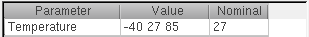
To select global variables to be varied:
-
Click Click to add in the Global Variables section in the table.
A list of global variables given in the Data View pane is displayed in the cell. -
From the list, select a global variable that you want to vary.
The tool gets the sweep values and the nominal value specified for the variable in the Variables and Parameters assistant and displays it in the Value and Nominal cells, respectively, as shown below.
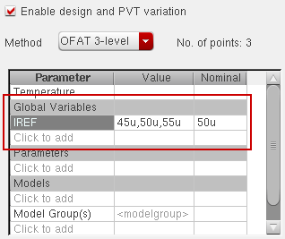If required, you can change the range or nominal value for a variable in this table. For more details, refer to Changing the Parameter Value and Changing the Nominal Value.
To select design parameters to be varied:
-
Click Click to add in the Parameters section in the table.
A list of parameters already defined in the Variables and Parameters assistant is displayed in the cell. -
From the list, select the parameter that you want to vary.
The tool reads the range of values and design value for the selected parameter from the Variables and Parameters assistant and displays it in the Value and the Nominal column, respectively, as shown below.
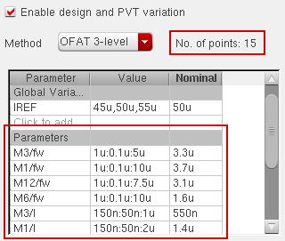If required, you can change the range or nominal value for a variable in this table. For more details, refer to Changing the Parameter Value and Changing the Nominal Value.By default, only the names of the device parameters are displayed in the Parameters column of the Parameter table. To view the complete path (<Library>/<Cell>/<View>/<parameter_name>) to the device parameters, right-click either the Parameters header or the parameter name in the cell, and then select Show Lib/Cell/View.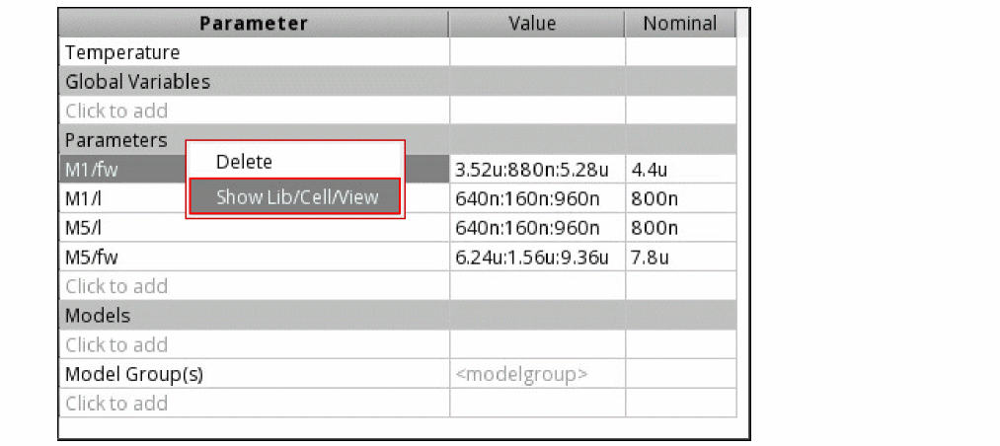The complete paths to the device parameters are displayed in the Parameters column, as shown in the following figure.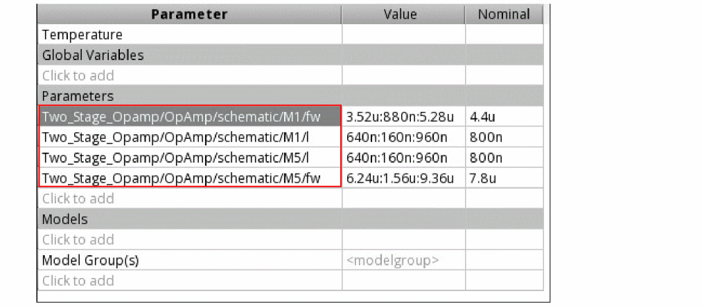Alternatively, you can move the mouse over the row of a parameter to view the library/cell/view information for the device parameter.
To select model files to be varied:
-
Click Click to add in the Models section in the table.
The Add/Edit Model Files form is displayed. -
Browse and select a model file for which you want to vary different sections.
The name of the file appears in the cell. -
Double-click in the Value cell.
A list of sections defined in the specified model file appears. -
Select a section that you want to add to the list.
You can select multiple sections that you want to vary for the model file. -
Double-click in the Nominal cell and select name of a section that you want to use as a nominal value for the selected model file, as shown below.
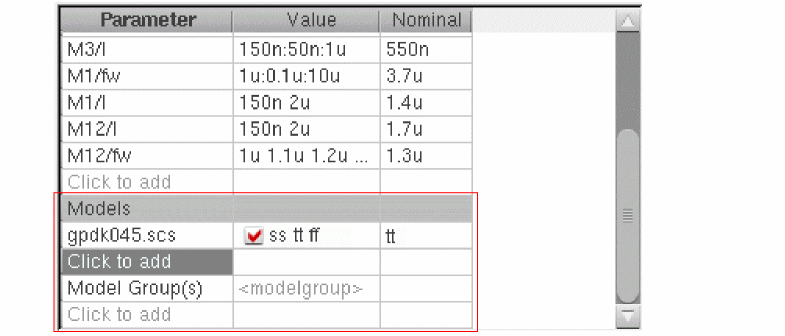
Similarly, you can select model groups that you want to vary for the simulation.
Changing the Parameter Value
To change the values for a parameter, double-click in the Value cell for the variable or parameter and edit the value. You can either specify a range or specify a list of space-separated values, as shown below.
Alternatively, you can select one or more values and right-click to display the shortcut menu:
- Load Values to load the values defined in the Data View or the Variables and Parameters assistant
- Load Min and Max to load only the minimum and maximum values defined in the Data View or the Variables and Parameters assistant.
- Set Sweep/Value to edit the exclusion/inclusion list.
Changing the Nominal Value
By default, the nominal value for each variable or parameter is taken from the design, but you can modify it.
To change the nominal value for a variable or parameter:
-
Double-click the value.
A list of possible nominal values calculated from its sweep range is displayed. - Select a value from the list or type any other value.
Alternatively, select one or more cells in the Nominal column and right-click to display the context-sensitive menu:
Choose one of the following commands to use values from a saved state or schematic:
-
Get value from Setup State to get the nominal value from a saved setup state.
The Get Nominal Values from Setup State form is displayed. Select the name of a saved state from the State Name list. Select Parameters in the What to Load section. This option copies the values of all the parameters from the selected saved state. Click OK to close the form. - Get Schematic value to get the nominal value from the schematic.
-
It is not essential to specify a nominal value when the Hammersley variation method is selected. A nominal value is necessary for the
OFATmethods. -
If the variation method is
OFAT 3-level, a list of all possible nominal values calculated by using the range of values is displayed. -
If the variation method is
OFAT Sweep, all sweep values appear in the list. You can select any value from this or type a different value. - A valid nominal value for a parameter is any value from within the range or sweep set corresponding to the parameter. If you specify a nominal value outside the specified range or the sweep set, the tool does not accept the value and makes the cell blank.
- If the value taken from the setup state or schematic does not fall in the given value range or sweep set, the tool automatically expands the range or adds the schematic value to the sweep set.
- For global variables, the context-sensitive menu displays the Get value from Test command instead of Get Schematic value. Use this command to copy the value of a variable or parameter from the test.
Selecting Instances and Parameters for Mismatch Variation
By default, statistical analysis analyzes mismatch variations for all devices and instances in the design. If the number of instances is large, time to run simulation is high. You can limit mismatch variation analysis to run for a selected set of instances or devices. For this, click Specify instances/Devices on the Sensitivity options form.
The tool netlists the design for the enabled tests and extracts data on the instances modeled by statistical mismatch.
After the dummy simulations are run successfully, the Select Instances and Parameters for Mismatch form is displayed, as shown in the following figure.
Only those instances that are modeled with mismatch variation will be listed in the Choices lists.
To select instances and parameters, do the following:
-
In the Instance Selection Method section, select a method by which you want to select instances. You can select instances in any of the following three ways:
- By selecting instances on schematic. For this, select the Schematic option in the Instance Selection Method section. For more details, refer to Selecting Instances from Schematic.
- By selecting instances of master cellviews. For this, select the Master option in the Instance Selection Method section. For more details, refer to Selecting Instances from Master Cellviews.
- By selecting subcircuit instances. For this, select the Subcircuits option in the Instance Selection Method section. For more details, refer to Selecting Instances from Subcircuits.
- Click OK to save the changes and return to the Sensitivity options form.
Next time when you run sensitivity analysis, the mismatch variation is run for only the selected instances. For example, in the following figure, the variation is limited to only selected instances and parameters.
Selecting Instances from Schematic
To select instances from schematic, do the following:
- In the Instance Selection Method section, select the Schematic option.
-
In the Test list, select the name of test for which you want to open the schematic view.
- Click Select Instances. The schematic view for the selected test is opened in a new tab.
- On the schematic tab, hold the Shift key and select instances that you want to include for mismatch variation.
-
Press the Esc key when done.
The list of selected instances that are modeled with statistical mismatch variation is displayed in the Choices list. -
In the Choices list, select an instance.
modeled parameters corresponding to the selected instances are displayed in the Param Choices list. -
In the Param Choices list, select
ALLor specific parameters that you want to vary for mismatch variation. - Click Apply to save the selections as rows in the tabular list, as shown in the following figure.
Selecting Instances from Master Cellviews
To select instances from cellviews, do the following:
-
In the Instance Selection Method section, select the Master option.
List of all the libraries, cells, and views are displayed for the selected test. -
Select the library, cell, and view name for which you want to select instances.
For the selected cellview, the list of instances that are modeled with statistical mismatch variation are displayed in the Choices list. -
In the Choices list, select one or more instances.
The modeled parameters corresponding to the selected instances are displayed in the Param Choices list. -
In the Param Choices list, select
ALLor specific parameters that you want to vary. - Click Apply to save the selections as rows in the tabular list, as shown in the following figure.
Selecting Instances from Subcircuits
To select instances from subcircuits, do the following:
- In the Instance Selection Method section, select Schematic.
-
In the Test list, select the name of test for which you want to open the schematic view.
-
In the Subcircuit list, choose the subcircuit whose instances you want to select.
All the instances in the selected subcircuit that are modeled with statistical mismatch variation are displayed in the Choices list. -
In the Choices list, select one or more instances.
The modeled parameters corresponding to the selected instances are displayed in the Param Choices list. -
In the Param Choices list, select
ALLor specific parameters that you want to vary. - Click Apply to save the selections as rows in the tabular list, as shown in the following figure.
Saving Sensitivity Data for DC Operating Point Parameters
By default, you cannot view the sensitivity data for DC operating point parameters because the data is not saved in the results database. The Select OP Point Parameters form allows you to specify the DC operating point parameters for which you want to save and view sensitivity data. For more information about viewing sensitivity data, see Viewing Sensitivity Analysis Results.
To specify the DC operating point parameters for which you view sensitivity data, do the following:
-
On the Sensitivity form click the Specify DC Operating Point Parameters button.
The Select OP Point Parameters form appears.
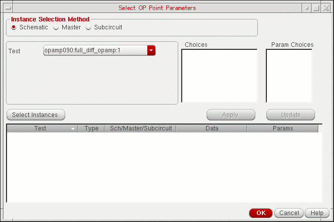 -
Do one of the following:
Select To Add DC operating point parameters by selecting instances on the schematic.
For more information, see Adding DC Operating Point Parameters of Schematic Instances.
Add DC operating point parameters of instances of cellviews.
For more information, see Adding DC Operating Point Parameters of Cellview Instances.
Add DC operating point parameters of subcircuit instances.
For more information, see Adding DC Operating Point Parameters of Subcircuit Instances.
- Click OK to save the changes and return to the Sensitivity options form.
Adding DC Operating Point Parameters of Schematic Instances
To add DC operating point parameters by selecting instances on the schematic, do the following:
-
Select the Schematic option.
-
In the Test drop-down list, choose the test in which you want to select instances.
To select instances for all the tests that are enabled in the Data View pane, choose All Tests in the Test drop-down list. If you choose All Tests, the Select Lib/Cell/View for DC-OP Parameters form appears.
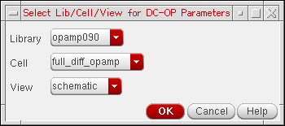Do the following to open the schematic view from which you want to select instances for all the tests that are enabled in the Data View pane.
The selected schematic view is opened in a new tab. - If a test name is selected in the Test drop-down list, click the Select Instances button. The schematic for the test is opened in a new tab.
-
In the schematic, select one or more instances.
To select more than one instance at a time, do one of the following:- Hold down the Shift key and click the instances.
-
Click and drag the mouse over the instances you want to select.
All the instances that are within the yellow bounding box that appears are included in the selection.
In the following example, instancesM6AandM6Bthat are within the yellow bounding box are included in the selection.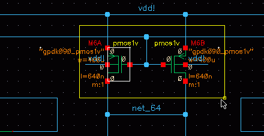
-
Press the Esc key when you are done.
The selected instances are displayed in the Choices field.
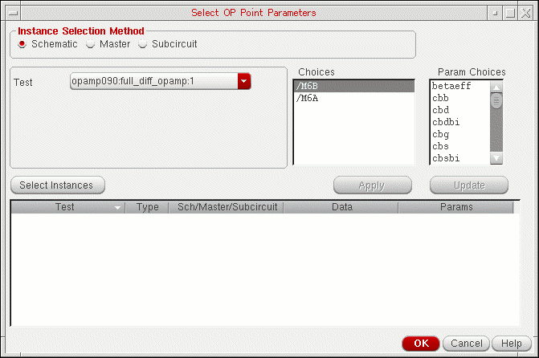If All Tests is selected in the Test drop-down list, the instance names of the selected instances in the designs for all the tests are displayed in the Choices field. You can place the mouse pointer in the Choices field to view the instance names of the selected instances in the design for each test.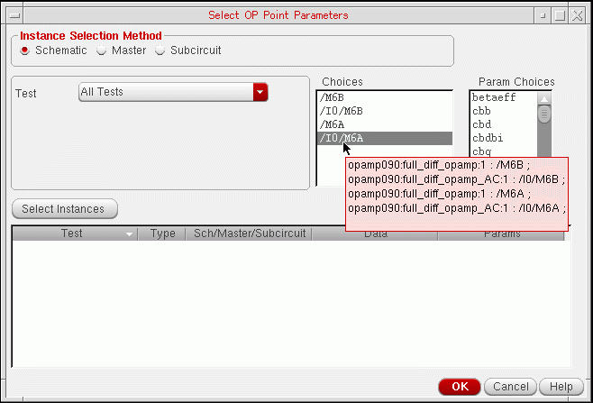 -
In the Choices field, select the instance for which you want to add DC operating point parameters.
The DC operating point parameters for the instance are displayed in the Param Choices field.If the same DC operating point parameter exists in more than one instance, you can simultaneously add the parameter for all the instances by selecting those instances in the Choices field. To select multiple instances, hold down the Shift key (for contiguous selection) or the Ctrl key (for noncontinguous selection) and click the next instance to add it to the selection set. -
In the Param Choices field, select the DC operating point parameter you want to add.
To select multiple DC operating point parameters, hold down the Shift key (for contiguous selection) or the Ctrl key (for noncontinguous selection) and click the next parameter to add it to the selection set. -
Click Apply.
The selected parameters are added for the test. For example, in the following figure, the DC operating point parametersbetaeffandcbbof instanceM6Bare added for theopamp090:full_diff_opamp:1test.
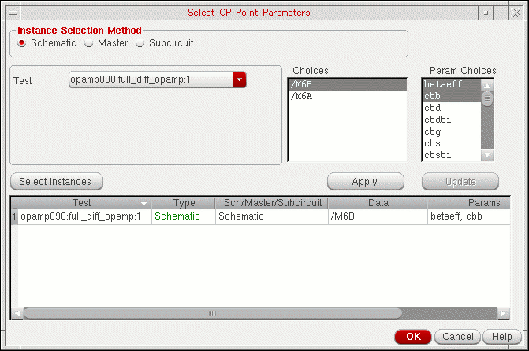
Adding DC Operating Point Parameters of Cellview Instances
To add DC operating point parameters of instances of cellviews, do the following:
-
Select the Master option.
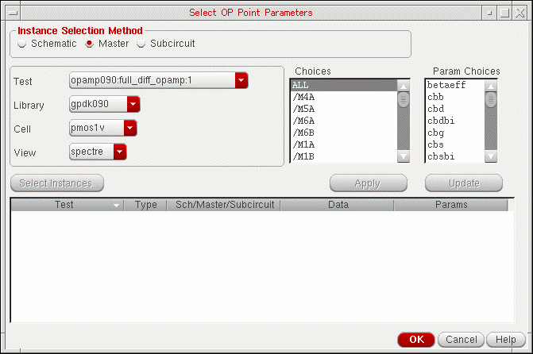 -
In the Test drop-down list, choose the test for which you want to select instances of cellviews.
To select instances for all the tests that are enabled in the Data View pane, choose All Tests in the Test drop-down list. -
Use the Library, Cell and View drop-down lists to select the library, cell and view in which the cellview exists.
All the instances of the cellview in the design for the test are displayed in the Choices field.
Note the following:- The Library, Cell and View drop-down lists display only the libraries and cells for the cellviews that have DC operating point parameters.
-
If All Tests is selected in the Tests drop-down list, the Choices field displays the instance names of the cellview in the designs for all the tests that are enabled in the Data View pane. For example, in the following figure, the Choices field displays the instance names of the
spectrecellview of thepmos1vcell in the designs for all the tests.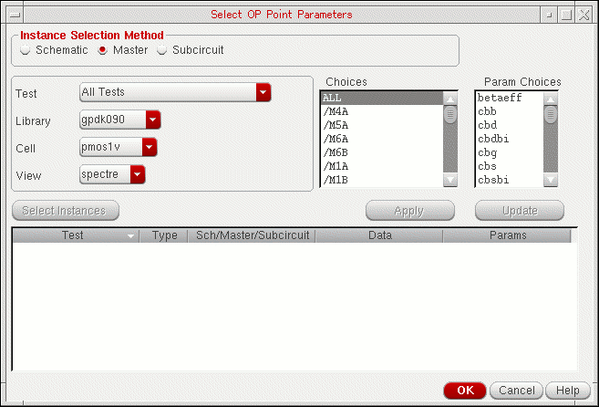
-
In the Choices field, select the instance for which you want to add DC operating point parameters.
The DC operating point parameters for the instance are displayed in the Param Choices field.
Note the following:- To add DC operating point parameters for all instances of the cellview, select ALL in the Choices field.
- If the same DC operating point parameter exists in more than one instance, you can simultaneously add the parameter for all the instances by selecting those instances in the Choices field. To select multiple instances, hold down the Shift key (for contiguous selection) or the Ctrl key (for noncontinguous selection) and click the next instance to add it to the selection set.
-
In the Param Choices field, select the DC operating point parameter you want to add.
To select multiple DC operating point parameters, hold down the Shift key (for contiguous selection) or the Ctrl key (for noncontinguous selection) and click the next parameter to add it to the selection set. -
Click Apply.
The selected parameters are added for the test. For example, in the following figure, the DC operating point parametersbetaeffandcbbon all instances of thespectrecellview of thepmos1vcell are added for theopamp090:full_diff_opamp:1test.
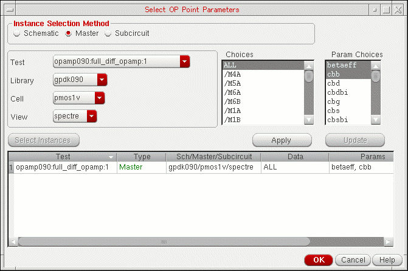
Adding DC Operating Point Parameters of Subcircuit Instances
To add DC operating point parameters of subcircuit instances, do the following:
-
Select the Subcircuit option.
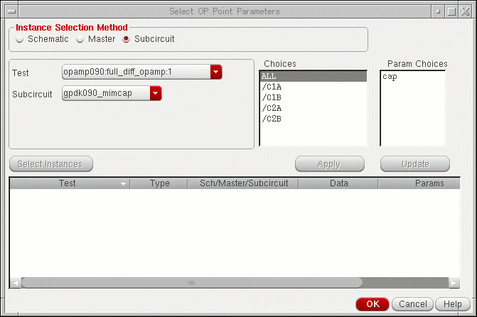 -
In the Test drop-down list, choose the test for which you want to select subcircuit instances.
To select subcircuit instances for all the tests that are enabled in the Data View pane, choose All Tests in the Test drop-down list. -
In the Subcircuit drop-down list, choose the subcircuit whose instances you want to select.
All the instances of the subcircuit in the design are displayed in the Choices field.
Note the following:- The Subcircuit drop-down list displays only the subcircuits that have DC operating point parameters.
-
If All Tests is selected in the Tests drop-down list, the Choices field displays the instance names of the subcircuit in the designs for all the tests. For example, in the following figure, the Choices field displays the instance names of the
ampnsubcircuit in the designs for all the tests.
You can place the mouse pointer in the Choices field to view the instance name of the subcircuit in the design for each test.
-
In the Choices field, select the instance for which you want to add DC operating point parameters.
The DC operating point parameters for the instance are displayed in the Param Choices field.If the same DC operating point parameter exists in more than one instance, you can simultaneously add the parameter for all the instances by selecting those instances in the Choices field. To select multiple instances, hold down the Shift key (for contiguous selection) or the Ctrl key (for noncontinguous selection) and click the next instance to add it to the selection set. -
In the Param Choices field, select the DC operating point parameter you want to add.
To select multiple DC operating point parameters, hold down the Shift key (for contiguous selection) or the Ctrl key (for noncontinguous selection) and click the next parameter to add it to the selection set. -
Click Apply.
The selected parameters are added for the test. For example, in the following figure, the DC operating point parametercapon all instances of thegpdk090_mimcapsubcircuit are added for theopamp090:full_diff_opamp:1test.
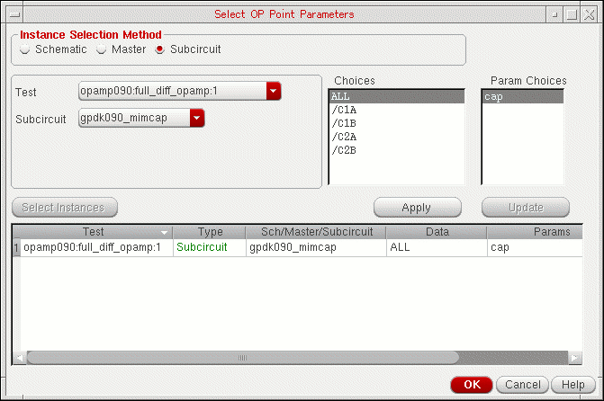
Replacing DC Operating Point Parameters
To replace one DC operating point parameter with another, do the following:
- Select the row for the parameter.
- Select a parameter in the Param Choices field.
-
Click the Update button.
The parameter in the row is replaced with the parameter selected in the Param Choices field.
Deleting DC Operating Point Parameters
To delete DC operating point parameters, do the following:
-
Right-click the row for a parameter and choose Delete.
To delete multiple parameters, hold down the Shift key (for contiguous selection) or the Ctrl key (for noncontinguous selection), click the rows for the parameters you want to delete, then right-click and choose Delete.
To delete all parameters, do the following:
- Right-click the row for a parameter and choose Select All.
- Right-click the row for a parameter and choose Delete.
Viewing Sensitivity Analysis Results
After the Sensitivity Analysis or the Monte Carlo run is complete, the tool automatically opens the Sensitivity Analysis window with sensitivity analysis results displayed in it.
To view sensitivity data for a sensitivity analysis run:
-
Click Sensitivity Results
on the Results tab.
Alternatively, on the History tab of the Data View pane, right-click the history of a Sensitivity Analysis or Monte Carlo run and choose Sensitivity Results.
The Sensitivity Analysis window appears, displaying results of sensitivity analysis.
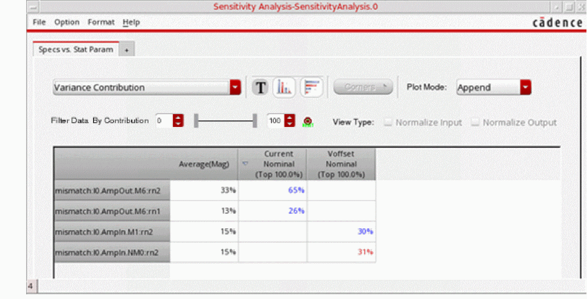
Viewing the Library, Cell, and View Information of the Device Parameters
To view the information about the library cellviews of the device parameters, do the following:
-
In the Sensitivity Analysis window, choose Option – Display.
The Display Options form is displayed.
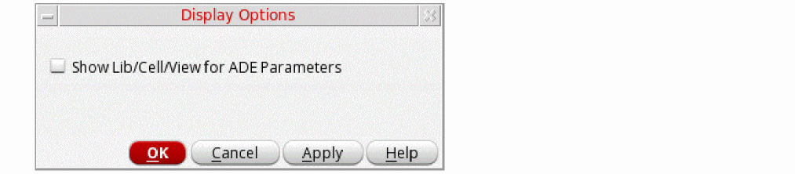 -
Select the Show Lib/Cell/View for ADE Parameters check box, and then click OK.
The library/cell/view information about the device parameters are displayed.
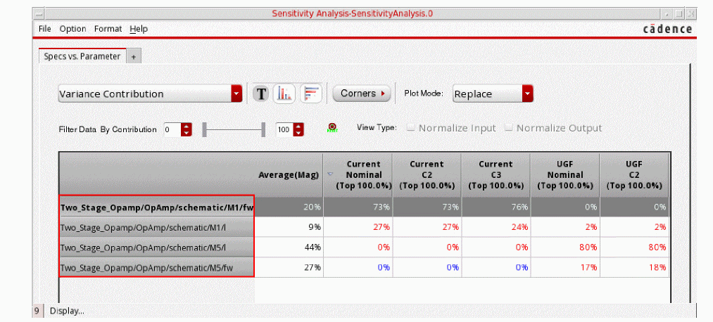
Reading Data in the Sensitivity Analysis window
In the Sensitivity Analysis window, sensitivity data is displayed in a tabular format, where each data cell shows the sensitivity of a spec or parameter in the corresponding column to the spec or parameter displayed in the corresponding row. The specs or parameters displayed in the inputs and outputs depend on the selected tab.
By default, the data shows sensitivity of each specification with respect to the available device and statistical parameters. This view is governed by the Specs vs. Parameter tab. To know more about the other available tabs, refer to Viewing Sensitivity Data in Different Tabs.
If the analysis was run on various corners, a column is added for each corner condition. For example, in the figure shown above, data for the gainBwProd spec is shown for all the three corners, nominal, C0_0, and C0_2.
There are various ways in which you can customize the way in which the sensitivity data is displayed. For more details on how to customize the view, refer to Working with Sensitivity Data.
For details on how to plot sensitivity results, refer to Plotting Sensitivity Analysis Results.
Viewing Sensitivity Data in Different Tabs
The Sensitivity Analysis window provides the following tabs for viewing sensitivity data:
- Specs vs. Specs
- Specs vs. Parameter
- Specs vs. Stat Param
- Specs vs. DC Ops
- DC Ops vs. Parameter
- DC Ops vs. Stat Param
- Stat Param vs. Stat Param
In these tabs, the input factor is displayed in the rows and the output is displayed in the columns. For example, in the Specs vs. Parameter tab shown in Figure , parameters are input factors and specifications are the output. Therefore, parameters are displayed in the rows and specifications are displayed in the columns. For information about working with the data in the tabs, see Working with Sensitivity Data.
N.A. in a cell in the Sensitivity Analysis window indicates that the sensitivity value could not be calculated because of some reason. You can place the mouse pointer on the cell to view the reason in a tooltip.These tabs are described below:
| Tab Name | Description |
|---|---|
|
Displays the sensitivity of each specification with respect to other specifications. |
|
|
Displays the sensitivity of each specification with respect to device and statistical parameters. Do the following to display the tab:
The sensitivity of statistical parameters is displayed in this tab only if sensitivity data for statistical parameters exists in the results database. See also, Hiding or Showing Statistical Parameters.
|
|
|
Displays the sensitivity of each specification with respect to statistical parameters. |
|
|
Displays the sensitivity of each specification with respect to DC operating point parameters. |
|
|
Displays the sensitivity of each DC operating point parameter with respect to device and statistical parameters. Do the following to display the tab:
The sensitivity of statistical parameters is displayed in this tab only if sensitivity data for statistical parameters exists in the results database. See also, Hiding or Showing Statistical Parameters.
|
|
|
Displays the sensitivity of each DC operating point parameters with respect to statistical parameters. |
|
|
Displays the sensitivity of each statistical parameter with respect to other statistical parameters. |
Working with Sensitivity Data
This following topics describe how you can work with the data in the Sensitivity Analysis window:
- Changing the Type and Format of Data To View
- Changing the Data View Type
- Filtering Data Based on Correlation Coefficient
- Filtering Data Based on Search Criteria
- Sorting Data
- Hiding Corner Data
- Hiding Specification Data
- Hiding or Showing the Detailed Results for Corners
- Hiding or Showing the Detailed Results for Specifications
- Hiding or Showing Statistical Parameters
- Showing All Hidden Data
- Highlighting Associated Devices in the Schematic
- Viewing Results in Multiple Sensitivity Analysis Windows
- Changing Number Format
Changing the Type and Format of Data To View
By default, the Sensitivity Analysis window shows the variance contribution data in percentage format. You can also view an overview of the data in thumbnail form or view the correlation and regression data by selecting an option from the drop-down list.
The Sensitivity Analysis window shows both correlation and regression data in the percentage format. This Sensitivity Analysis window is displayed when you analyze data by using the one-factor-at-a-time (OFAT) method.
When you analyze data during a Monte Carlo or Hammersley sampling run, you will notice an additional format, Multivariate Linear Regression, in the drop-down list.
In the one-factor-at-a-time (OFAT) method, a single variable linear regression model is followed, which means that an individual independent variable is created for each row in the sensitivity table. However, in the multivariate linear regression method, one common model is applied to all the rows in the sensitivity table.
To change the format of data to the graphical format:
For more details on different types and formats of data in the Sensitivity Analysis window, see:
- Viewing Correlation Data
- Viewing Correlation Data in Graphical Format
- Viewing Thumbnail Plots
- Viewing Regression Data
- Viewing Normalized Regression Data
- Viewing Regression Data in Graphical Format
Viewing Variance Contribution Data
Variance contribution uses a similar method as used by mismatch contribution (refer to
Mismatch contribution is applied to Monte Carlo results, where as variance contribution is used primarily to view the Sensitivity Analysis results; however, it can also be applied to Single run, Sweeps and Corners runs, Local Optimization, and Global Optimization runs.
To view the variance contribution data:
The variance contribution data appears as shown in the figure below. By default, this data is displayed in the percentage format.
The first column in the results table lists the variables, and the Average(Mag) column displays the average of percentage values of the variance contribution for each specification. Each cell in the other columns displays the variance contribution values. Positive values are displayed in blue and negative values are displayed in red.
You can also filter sensitivity analysis results data by contribution values by typing the specific contribution values in the Filter Data by Contribution boxes.
Viewing Variance Data in Graphical Format
When the Graphical check box is selected, the variance contribution data is displayed as shown in the following figure.
Figure 25-1 Variance Data Displayed in the Graphical Format
The first column lists the variables, and the Average(Mag) column displays the average of the fit values for each sensitivity in the row. Each cell in the other columns in the table displays a symbol that portrays:
Viewing Correlation Data
Correlation data tells how correlated each goal is to that variable. If the correlation is close to 1 (or -1), then they are highly correlated. However, if the correlation is 0, then the goal and variable are not correlated. The correlation value is always between -1 and 1.
-
Choose
Correlation Coefficientfrom the drop-down list at the top of a tab.
The correlation data appears. By default, this data is in the graphical format. For more details on this, refer to Viewing Variance Data in Graphical Format. To view the correlation data in numeral format, clear the Graphical checkbox.
Correlation data in numeral format is displayed as shown in the following figure.Figure 25-2 Correlation Data in Sensitivity Analysis window
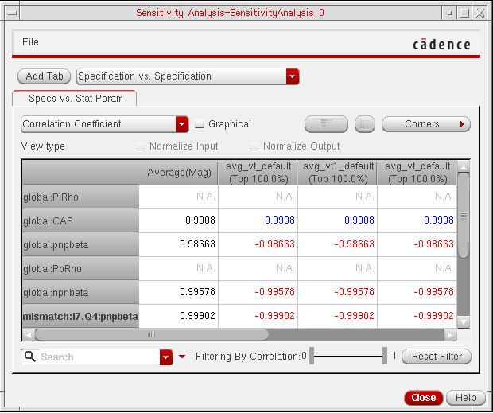
The first column lists the variables, and the Average(Mag) column displays the average of absolute values of correlation coefficients for each specification. Each cell in the other columns in the table displays the correlation values. Positive correlation values are displayed in blue color and negative values are displayed in red color.
Viewing Correlation Data in Graphical Format
When the Graphical checkbox is selected, the correlation data is displayed as shown in the following figure.
Figure 25-3 Correlation Data Displayed in the Graphical Format
The first column lists the variables, and the Average(Mag) column displays the average of the fit values for each sensitivity in the row. Each cell in the other columns in the table displays a symbol that portrays:
The polarity of the relationship is indicated by the direction of the slope of the line. A blue line that slopes from the lower left to upper right is positive. A red line that slopes from the upper left to the lower right is negative.
The tool illustrates how tightly the data fits to a line using the width and intensity of the shape. The narrower and brighter the line, the tighter the fit.
Viewing Thumbnail Plots
The default graphical view is the correlation data, which shows the positive or negative relation between the inputs and outputs. However, it does not show the view of exact relationship between the two. To show a better graphical representation of the relationship between the inputs and outputs, you can choose to show thumbnail images of the plots of the Sensitivity Analysis or Monte Carlo run results.
To show thumbnail plots, choose Thumbnail Plots from the drop-down list at the top of a tab. With this option, thumbnail plots of the results data are displayed in each cell, as shown in the following figure.
Figure 25-4 Thumbnail Plots with Line Graphs
By default, if the waveform contains ten points or less, a line plot is displayed, as shown in the figure above. For more than ten points, the thumbnail shows scatter plots, as shown in the following figure.
Figure 25-5 Thumbnail Plots with Scatter Graphs
The color of thumbnail plots depends on the sign of correlation coefficients. For positive correlation coefficients, the plots are displayed in blue and for negative values, they are displayed in red.
The thumbnail plot view gives you a view of all the plots at the same time. Click any thumbnail to view the plot in the Virtuoso Visualization and Analysis XL window.
Viewing Regression Data
The regression data shows the best fit line or the regression line that gives an output value which is close to the spec value.
The Sensitivity Analysis window allows you to view the following types of regression data.
-
The single variable linear regression is the slope of the line between goal values and variable values that best fits the data points. Thus, a change in the variable multiplied by the regression co-efficient is the change that can be expected in the goal value.
- The single variable quadratic regression uses a quadratic equation to fit the goal values with respect to the variable values. The coefficients from this option can be considered when the correlation values are close to zero and cannot be modelled by a straight line.
- The multivariate regression gives an estimate of the linear relationship between the output and all inputs.
To view regression data, choose one of the following from the drop-down list at the top of a tab:
-
Single Variable Linear Regressionto view single variable linear regression data. -
Single Variable Quadratic Regressionto view single variable quadratic regression data. -
Multivariate Linear Regressionto view multivariate linear regression data.
By default, the regression data appears in the graphical format. For more details, refer to Viewing Regression Data in Graphical Format.
Clear the Graphical checkbox to view the data in numeral format. The regression data appears as shown in the following figure.Figure 25-6 Regression Data in Sensitivity Analysis window
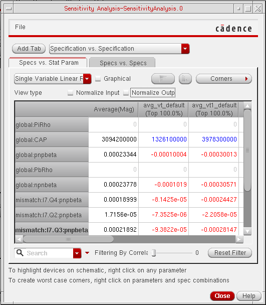
The first column lists the variables, and the Average(Mag) column displays the average of absolute values of regression coefficients for each specification. Each cell in the other columns in the table displays the regression values. Positive regression values are displayed in blue color and negative values are displayed in red color.
Viewing Normalized Regression Data
Normalized regression is the value of the regression coefficient calculated when either or both the input and the output parameter values are normalized.
- When only input parameters are normalized, we say it is input normalized regression coefficient.
- When only output parameters are normalized, we say it is output normalized regression coefficient.
- When both input and output parameters are normalized, we say it is input-output normalized regression coefficient.
ADE Assembler uses the following equations to normalize the data:
-
To normalize input values for design variables and statistical variables:
Xnorm = 2*(X-Xmin)/(Xmax-Xmin)
-
To normalize input values for Monte Carlo analysis:
Xnorm = (X-Xmean)/Xstd
-
To normalize output values for design variables and statistical variables:
Ynorm = (Y - Ymean)/Ymean, ifYmean!= 0
Normalized regression coefficients allow comparing the results between different specs for the same parameter (output normalized), same specs for different parameters (input normalized), and also between different parameter/spec combinations (input-output normalized).
-
Choose Single Variable Linear Regression, Single Variable Quadratic Regression, or Multi Variate Linear Regression from the drop-down list at the top of a tab.
The regression data appears. -
Do one of the following:
- To normalize the input data, select the Normalize Input check box.
- To normalize the output data, select the Normalize Output check box.
- To normalize both the input and the output data, select the Normalize Input and Normalize Output check boxes.
The regression data appears.
Figure 25-7 Regression Data in Sensitivity Analysis window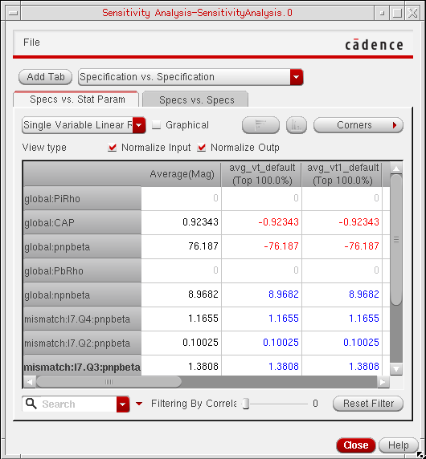
The first column lists the variables, and the Average(Mag) column displays the average of absolute values of normalized regression coefficients for each specification.
Viewing Regression Data in Graphical Format
In graphical format, the regression data is shown as bars. By default, the data is displayed as vertical bars, as shown in the following figure.
To display the regression data as horizontal bars, click the 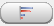 button next to the Graphical checkbox. The graphical data is changed as shown in the following figure.
Changing the Data View Type
A view type specifies the data that you want to view in inputs and outputs. You can specify the data view type by using the following list at top right of the tab.
The available view types and their descriptions are listed in the following table.
| View Type | Description |
|---|---|
You can plot the average results displayed by the view types listed in the table given above.
- Hiding Corner Data
- Hiding Specification Data
- Hiding or Showing the Detailed Results for Corners
- Hiding or Showing the Detailed Results for Specifications
- Hiding or Showing Statistical Parameters
- Showing All Hidden Data
Filtering Data Based on Correlation Coefficient
With the Filter by Correlation slider bars, you can choose to filter out relationships that are in a range of two given correlation values. By default, all the results in the range of 0 and 1 are displayed.
You can move the slider bars to specify the correlation filter range. For example, if you move the slider bars as shown below, the tool displays data with correlation coefficient values between 0.5 and 1.0.
Filtering Data Based on Columns
To find out the most or least sensitive parameters, you can apply a filter on a column. This will filter out parameter rows based on the value of the column data. When the correlation table is displayed, the filter is applied to the correlation data. When the regression table is displayed, the filter is applied to the regression data.
To filter data based on a column:
- Select a column based on which you want to filter the data.
-
Right-click and choose Add Filter.
The Add Filter form is displayed.
Figure 25-8 Add Filter Form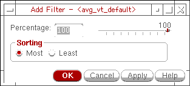 -
Specify a percentage value.
Alternatively, use the percentage slider to specify a percentage of parameters to be filtered. -
In the Sorting section, select any one of the two options, Most or Least, to display a specific percentage of top or bottom rows according to the sensitivity of parameters.
For example, if you specify35as the percentage value andMostas the sorting criteria, the tool will display the top 35% of rows that show strong correlation, as shown in the following figure.
To remove the filters on columns:
- Right-click in a column and choose Remove Filter.
- Click Reset Filter on the Sensitivity Analysis window. This removes all filters applied on the form.
Filtering Data Based on Search Criteria
The Search field allows you to filter the results in the Sensitivity Analysis window to view only the results for specific parameters. For example, if you type a string Q in the Search field, the form updates automatically to show only the results for the parameters whose names start with the string Q, as shown in the following figure.
To clear the search, click the button in the Search field.
Previous filters used in the current session are accessible from the drop-down list in the Search field.
The Advanced search drop-down list next to the Search field provides commonly used search options to refine your search results.
For more information on the Search field, see
Resetting Filters
To reset all the filters applied on sensitivity results, click Reset Filter next to the Filter by Correlation slider bar.
The tool removes all the applied filters and displays all the data for that view.
Sorting Data
To sort data in a row or a column in the Sensitivity Analysis window:
Data is always sorted based on normalized sensitivity regression coefficients.
Hiding Corner Data
You can do the following to hide corner data:
- To hide the data for a specific corner, right-click the column for the corner and choose Hide Corners.
- To hide the data for all corners other than a specific corner, right-click the column for the corner you don't want to hide and choose Hide Other Corners.
To show all hidden data, right-click and choose Show All.
Hiding Specification Data
You can do the following to hide specification data:
- To hide the data for a specification, right-click the column for the specification and choose Hide Specs.
- To hide the data for all specifications other than a specific specification, right-click the column for the specification you don't want to hide and choose Hide Other Specs.
To show all hidden data, right-click and choose Show All.
Hiding or Showing the Detailed Results for Corners
When you are
- To hide the detailed results for a corner, right-click the column for the corner and choose Collapse Selected Corners.
- To hide the detailed results for all corners, right-click and choose Collapse All Corners.
You can do the following to show the detailed results for corners in the Corner View:
- To show the detailed results for a corner, right-click the column for the corner and choose Expand Selected Corners.
- To show the detailed results for all corners, right-click and choose Expand All Corners.
Hiding or Showing the Detailed Results for Specifications
When you are
- To hide the detailed results for a specification, right-click the column for the specification and choose Collapse Selected Specs.
- To hide the detailed results for all specifications, right-click and choose Collapse All Specs.
You can do the following to show the detailed results for specifications in the Spec view:
- To show the detailed results for a specification, right-click the column for the specification and choose Expand Selected Specs.
- To show the detailed results for all specifications, right-click and choose Expand All Specs.
Hiding or Showing Statistical Parameters
Statistical parameters are displayed in the Specs vs. Parameter tab and the DC Ops vs. Parameter tab if the Enable variation of Statistical Parameters check box is selected in the
To hide the statistical parameters, right-click and choose Hide Statistical Parameters.
To show all hidden data, right-click and choose Show All.
Showing All Hidden Data
To show all hidden data, right-click and choose Show All.
Highlighting Associated Devices in the Schematic
When you right-click the parameters in the Sensitivity Analysis window and choose Highlight on Schematic, the associated device(s) in the schematic are highlighted.
Viewing Results in Multiple Sensitivity Analysis Windows
If you want to view the results of Sensitivity Analysis in different view modes and with different filtering conditions at the same time, you can open the same results in multiple windows. Next, you can apply different view settings and filters in different windows and compare the results.
To open the results in multiple windows, perform the following steps:
-
In the Data View, right-click a history run and choose Sensitivity Results.
A new Sensitivity Analysis window is opened with the results of the selected history displayed in it. - If required, customize the view of results as per your requirements.
-
In the Sensitivity Analysis window, choose File — New Window.
A new Sensitivity Analysis window is opened and the same results are displayed in it. The data view settings in the new window are same as those in the first window. However, you can customize these, as required. Now, the same results are visible in two different windows with different view settings.
Changing Number Format
By default, in numeral format, the number of significant figures used to display data is not fixed. In the results shown below, the data appears in different significant digits.
If required, you can set a fixed number of significant digits in which you want to display the numeral data. For this, you can use the Number Formatting Options form.
-
In the Sensitivity Analysis window, choose Format — Numbers.
The Number Formatting Options form is displayed. The default format is Auto.
-
Select Fixed to display the numbers in a fixed point format.
-
In the Decimal Places field, specify the number of decimal places that you want to show for each number in the results.
- Click Apply to apply the changed format.
In the results shown below, the data appears in the fixed format with four decimal places.
Plotting Sensitivity Analysis Results
The sensitivity analysis results can be plotted in the Virtuoso Visualization and Analysis XL window. The data can be plotted in three ways:
-
Double-click any data cell in the Sensitivity Analysis results window. The correlation and regression data in the plotted graph exhibits the sensitivity of the selected specification to the corresponding parameter, as shown below.
-
Select two or more parameter cells for a single spec column, right-click, and choose the Plot Across Selected Parameters command. This displays the sensitivity of multiple selected parameters to the specification represented by the corresponding column, as shown in the following figure:
-
Select two or more data cells in different spec columns, right-click, and choose the Plot Across Parameters command to display the sensitivity of the selected parameters to the selected specifications.
For example, select cells for different specs and parameters, as shown in the following figure:
Now, right-click and choose Plot Across Parameters.
In this case, the result for each parameter and spec combination is plotted in a separate strip, as shown in the figure below.
If the Virtuoso Visualization and Analysis XL window is already open for the selected history, by default, a new plot always replaces the previous plot. However, you can specify different plotting modes depending on your data analysis requirements. For more details, refer to the following sections:
- Setting the Plotting Mode
- Displaying the ADE XL and Sensitivity Analysis Results in the Same Graph
- Plotting Average Sensitivity Analysis Results
- Displaying Spec Markers in Sensitivity Analysis Plots
Setting the Plotting Mode
You can set the plotting mode for the sensitivity analysis results graph by using the Plotting Options form.
In the Sensitivity Analysis Results window, choose Options – Plotting. The Plotting Options form is displayed. In this form, the Plot Mode field specifies the plotting mode of the graph. By default, the default plotting mode is set to Replace.
You can select any one of the following plotting modes:
Replace Plot Mode
In this mode, the new plot always replaces an existing graph, if any. Otherwise, a new window appears that displays the graph.
Append Plot Mode
In this mode, if a graph is already open for the selected history, the new plot is appended to the existing graph. Otherwise, the new plot is displayed in a new window.
Consider an example. A graph is already open for the selected history and displays the sensitivity of op_OUT1 to the parameter R0/r. Next, if you set the plot mode to Append and plot the sensitivity of op_OUT2 to the parameter R0/r, the new plot is appended to the existing graph, as shown below.
The tool does not retain plots with different x axes on the same graph. In the example shown above, if you plot the results for a different parameter, the graph will be plotted in a new subwindow. If you select multiple results for different parameters and choose Plot Across Parameters, the graphs are plotted in one subwindow per graph.
If the view type is 'View average results for all corners at each spec', graphs are overlaid by corners, one spec per subwindow.
Exceptions to the Append Plot Mode
When the Plot Mode is set to Append, in the following two cases, the new plot is displayed in a new strip instead of being appended to the existing graph:
- If the new plot is for the same parameter but for a different specification as that of the graph plotted earlier, the new plot is displayed in a new strip instead of being appended to the existing graph because of common x-axis parameter, as shown below.
-
If you plot multiple parameters for the same specifications, all graphs are plotted in different subwindows, and next, if you plot the results for new parameters, a new subwindow is created for each additional graph because the x-axes refer to different parameters. Only when different specifications are plotted for the same parameter successively, they are appended to strips.
-
For design variables and statistical variables:
Xnorm = 2*(X-Xmin)/(Xmax-Xmin)
-
For Monte Carlo analysis:
Xnorm = (X-Xmean)/Xstd
New SubWin Plot Mode
In this plot mode, if a graph is already open for the selected history, the new plot is added to a new subwindow in the existing graph.
Consider an example. You have plotted the sensitivity data for the Open_Loop_Gain specification to parameters M12/I, PM5/fw, M6/fw, and M1/I.
Next, you want to plot and compare the sensitivity data for Slew_Rate to the same set of parameters. If you set the plot mode to New SubWin and plot data for these parameters, the graph appears as shown below.
New Win Plot Mode
In this plot mode, for every new plot, a window is added to the existing Virtuoso Visualization and Analysis XL window, as shown below.
Displaying the ADE XL and Sensitivity Analysis Results in the Same Graph
If you have already plotted results from the ADE XL window, you can choose to plot the sensitivity analysis results in the same graph. To do this, select the Allow interaction with existing ADE XL plot windows check box in the
For example, when you plot an output, ACGainBW, from the ADE XL results tab, the graph appears as shown below.
Now, if you want to plot the sensitivity results in a new subwindow of this graph to show sensitivity of UGF_ACGainBW to the variable M3/I, set the plotting options as shown below:
Now, if you plot the sensitivity results, a new subwindow is added as shown below.
Plotting Average Sensitivity Analysis Results
If you change the default Sensitivity Analysis results view and display average results of all the corners for each spec or results of all specs for each corner, you can double-click in a cell to show all the plots.
For example, if you display average results of all corners at each spec, when you double-click in a cell, the plots are displayed as shown below.
Similarly, you can plot average results of all corners at each spec.
Displaying Spec Markers in Sensitivity Analysis Plots
Similar to the ADE XL graphs, you can display spec markers in the graphs plotted for Sensitivity Analysis results. For this, on the Results tab of ADE XL, choose Options —Plotting/Printing. On the ADE XL Plotting/Printing Options form, select Spec Markers. When this option is selected, the graphs displayed from the Results tab of the Output pane show spec markers, as shown below.
The specs vs. parameter graphs displayed from the Sensitivity Analysis window also show spec markers, as shown below.
Saving the Sensitivity Data
You can save the sensitivity data to a text file:
- Choose File – Export Results to CSV, then do one of the following:
- In the Export Results form, specify a path and file name.
- Click OK.
Highlighting a Device on Schematic
While analyzing data in Sensitivity Analysis table, you can highlight a device on the schematic to view its exact location. This helps in identifying and modifying a device in schematic to improve the variance data, if required.
To highlight a device on schematic:
Alternatively, press bindkey H.
Return to top